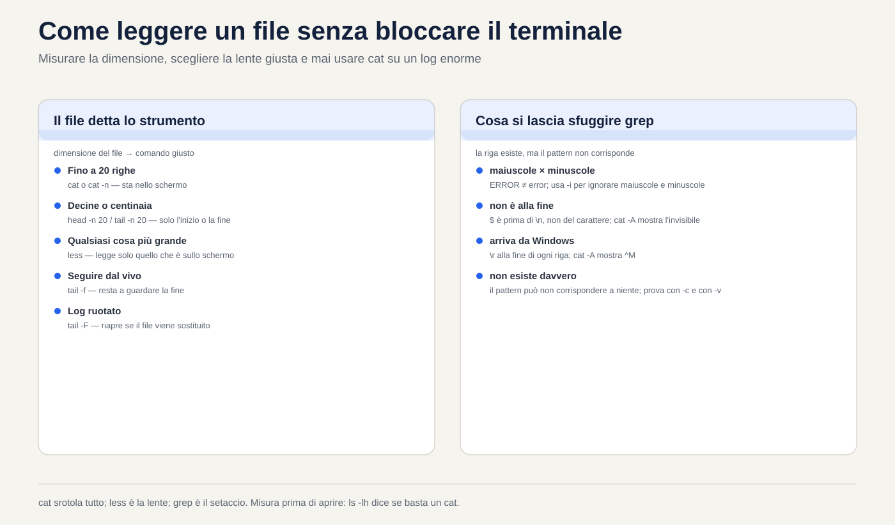
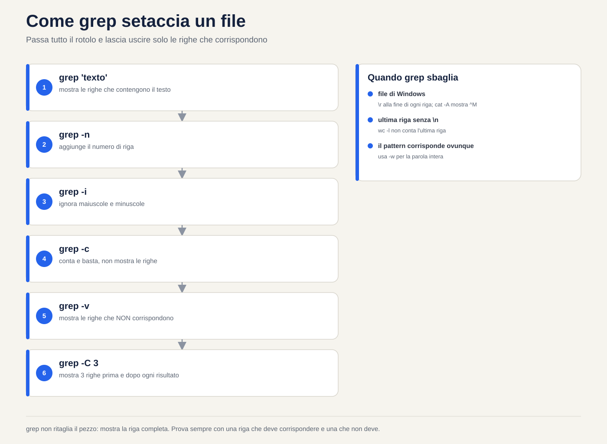
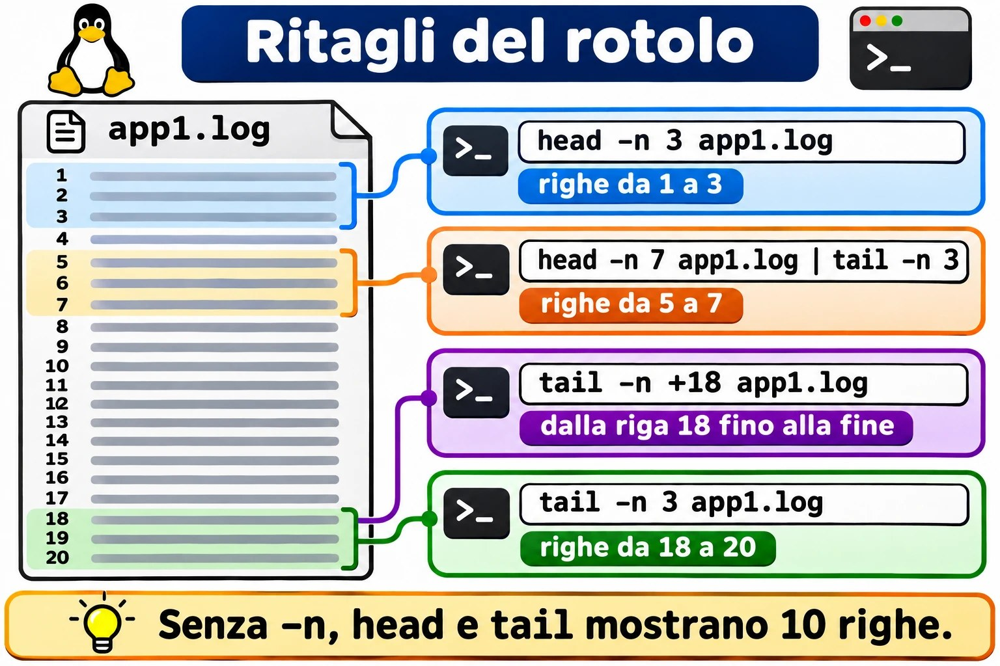
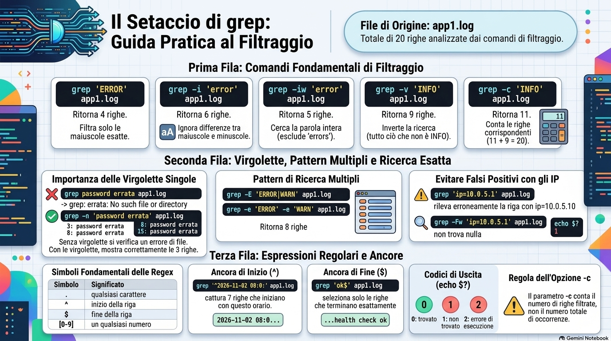
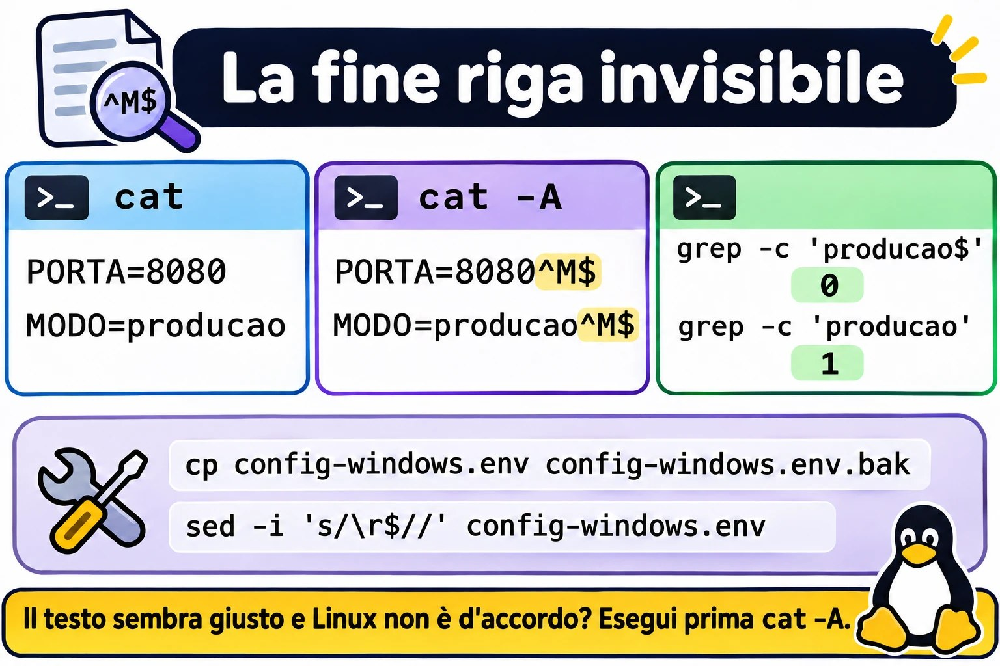

Lezione 1.5 · Leggere e cercare testo
Impari a leggere qualsiasi file di testo del server senza bloccare il terminale e senza rischiare di modificarlo, e a trovare in pochi secondi la riga che conta. Può essere un log da 3 GB, una configurazione da 900 righe o un'intera cartella di file: il metodo è lo stesso. Misurare prima di aprire, andare dritti al punto e lasciare che grep faccia da setaccio.
| Scheda | Lezione 1.5 |
|---|---|
| Modulo | M1 · Riga di comando, lezione 5 di 10 |
| Quando | Settimana 2 |
| Alla fine sei in grado di | Leggere un file di qualsiasi dimensione senza bloccare il terminale; andare dritto in fondo a un log e seguirlo in tempo reale, anche dopo la rotazione; contare righe e occorrenze; trovare una riga in un file o in un'intera cartella; mostrare solo le righe attive di una configurazione; capire perché grep non trova una riga che stai vedendo sullo schermo |
| Prerequisiti | Lezione 1.4, con ~/lab13 ancora presente nelle VM |
| Durata | Circa 2h30 |
| Snapshot | m1a5-inicio e m1a5-fim su entrambe le VM |
1 · Riscaldamento
Tre domande, a memoria, prima di leggere qualsiasi cosa. Scrivi le risposte; le soluzioni le trovi a fine lezione.
- Hai cancellato un log da 5 GB con
rm, edfnon è sceso. Quale comando mostra chi tiene ancora aperto il file? - Lanci
mv app.log app.log.1sullo stesso file system. Cosa succede all'inode? - In
~/lab13/logs, cosa consegna la shell agrepquando scrivigrep erro *.log? Il file.escondido.logviene incluso?
2 · Perché conta
Lunedì, ore 9. Il cliente chiama: il sistema è andato giù nella notte. Entri via SSH e scrivi cat /var/log/app/app.log. Il file pesa 3 GB. Il terminale scorre per minuti, Ctrl+C ci mette un'eternità a rispondere, e quello che è successo alle 3 ti sfila davanti in un lampo. Provi ad aprirlo nell'editor, e il server, che era già a corto di memoria, comincia a boccheggiare.
L'admin esperto fa un'altra cosa. Prima misura: ls -lh mostra 3 GB, quindi niente cat. Va dritto in fondo con tail -n 100, perché il problema è recente. Setaccia con grep -n -i 'error' e l'orario del crash. Apre cinque righe attorno al risultato con grep -C 5. Chiede al cliente di riprovare e segue tutto in tempo reale con tail -F. In due minuti ha la riga esatta da incollare nel ticket, e non ha cambiato un solo byte di niente.
Il secondo caso: cambi PermitRootLogin no in sshd_config, riavvii il servizio, e root continua a entrare. Un sudo grep -rn PermitRootLogin /etc/ssh/ ti mostra, in tre secondi, un file dentro sshd_config.d/ che viene letto prima e vale di più. Senza grep, ci metti un pomeriggio.
Il terzo è il più irritante: grep dice che la riga non esiste, ma è lì, sul tuo schermo. Il file arriva da Windows. Questa lezione ti mostra perché succede e come vedere l'invisibile.
3 · Modello mentale
Un file di testo è un rotolo di carta con delle righe. Ogni comando di questa lezione è un modo diverso di guardare il rotolo, e nessuno di loro ci scrive sopra.
catsrotola tutto il rotolo in un colpo solo davanti a te. Ottimo per 20 righe; un disastro per 2 milioni.lessè una lente d'ingrandimento: va avanti e indietro, salta in fondo, cerca una parola. Legge solo il pezzo che è sullo schermo, per questo apre 3 GB all'istante.headmostra l'inizio del rotolo;tailmostra la fine. Con-f,tailresta a guardare la fine mentre il rotolo cresce.wcmisura il rotolo: righe, parole e byte.grepè un setaccio: passa tutto il rotolo e lascia uscire solo le righe che contengono quello che hai chiesto.
app1.log (20 linhas)
┌───────────────────────────────────────────┐
│ 1 08:00:01 INFO web: servidor iniciado │ ◄── head -n 3
│ 2 08:00:02 INFO db: conexão aberta │
│ 3 08:03:15 WARN web: resposta lenta │
│ … │
│ 5 08:06:02 ERROR auth: senha incorreta │ ◄── grep ERROR deixa passar
│ … │
│ 18 08:45:00 INFO cron: limpeza de /tmp │ ◄── tail -n 3
│ 19 08:50:27 INFO auth: login ok │
│ 20 09:00:00 INFO web: health check ok │
└───────────────────────────────────────────┘
less: a lupa que anda pelo rolo inteiro
wc -l: 20La prima idea: tutto è riga. Per questi strumenti, una riga termina con un carattere invisibile, il fine riga, che si scrive \n. Chi non vede questo carattere cade nelle due trappole di questa lezione. Un file salvato in Windows termina ogni riga con \r\n, e quel \r invisibile fa sbagliare grep. E un'ultima riga senza \n non entra nel conteggio di wc -l.
La seconda idea viene dalla Lezione 1.4: tail -f segue l'appartamento, non il nome. Apre il file e resta a guardare quell'inode. Quando il log viene ruotato con un mv, il nome passa a puntare a un file nuovo, ma tail -f resta su quello vecchio, ormai fermo.
antes: app.log ────► inode 5001 ◄── tail -f olhando aqui
mv app.log app.log.1 (a rotação)
depois: app.log.1 ──► inode 5001 ◄── tail -f continua aqui, e nada mais chega
app.log ────► inode 5002 ◄── o programa escreve aquiLa correzione è una lettera: tail -F segue il nome e riapre il file quando viene sostituito. Il Guasto B ti fa vedere tutto questo mentre succede.
Ponte Windows. In Windows apri il Visualizzatore eventi e filtri con il mouse. In Linux il log è un file di testo, oppure il journal, che ha una lezione tutta sua, e questi sei comandi sono il tuo filtro. La differenza che inganna di più chi viene da PowerShell: Select-String ignora maiuscole e minuscole per impostazione predefinita, grep no. Per grep, ERROR e error sono testi diversi finché non chiedi -i.
4 · Concetto a strati
Essenziale
| Comando | Cosa fa | Quando usarlo |
|---|---|---|
cat arquivo | Mostra tutto il file | File che sta in una schermata |
cat -n arquivo | Mostra il file con il numero di ogni riga | Per dire "riga 37" a qualcuno |
cat -A arquivo | Mostra gli invisibili: $ a fine riga, ^I per il tab, ^M per il \r di Windows | Quando il testo sembra giusto e non funziona |
less arquivo | Lo apre con la lente | Qualsiasi cosa più grande di una schermata |
head -n 20 arquivo | Le prime 20 righe | Intestazione, inizio di un CSV |
tail -n 20 arquivo | Le ultime 20 righe | Cosa è successo per ultimo in un log |
tail -f arquivo | Mostra la fine e aspetta nuove righe | Seguire in tempo reale |
tail -F arquivo | Come sopra, ma riapre il file se viene sostituito | Seguire un log che passa da logrotate |
wc -l arquivo | Conta le righe | "Quanti tentativi di login?" |
grep 'texto' arquivo | Mostra le righe che contengono il testo | Trovare la riga che conta |
Senza -n, head e tail mostrano 10 righe. Vale la pena impararlo a memoria.
Le opzioni di grep che usi ogni settimana:
| Opzione | Effetto | Esempio |
|---|---|---|
-i | Ignora maiuscole e minuscole | grep -i 'error' app1.log |
-n | Mostra il numero della riga | grep -n 'ERROR' app1.log |
-c | Conta le righe che corrispondono, invece di mostrarle | grep -c 'WARN' app1.log |
-v | Inverte: mostra le righe che non corrispondono | grep -v 'INFO' app1.log |
-w | Solo parola intera: error non prende errors | grep -iw 'error' app1.log |
-e | Più di un pattern nello stesso comando | grep -e 'ERROR' -e 'WARN' app1.log |
-E | Forma estesa, con la barra verticale come "oppure" | Nel Passo 7 |
-F | Testo letterale: il punto vale solo come punto | grep -F '10.0.5.1' app1.log |
-r | Cerca in tutti i file di una cartella | sudo grep -r 'Port' /etc/ssh/ |
-l | Mostra solo il nome dei file che contengono il testo | grep -rl 'senha' ~/lab13 |
-C 3 | Mostra 3 righe prima e 3 dopo ogni risultato | grep -C 3 'timeout' app1.log |
-q | Non mostra nulla; dice solo, tramite il codice di uscita, se ha trovato | grep -q 'ERROR' app1.log; echo $? |
I tasti di less:
| Tasto | Cosa fa |
|---|---|
Espaço / b | Scende / sale di una schermata |
g / G | Va alla prima / all'ultima riga |
/texto | Cerca in avanti |
?texto | Cerca all'indietro |
n / N | Risultato successivo / precedente |
&texto | Mostra solo le righe con il testo; & e Invio annulla |
F | Modalità in tempo reale, come tail -f; Ctrl+C ne esce |
-N | Attiva e disattiva il numero delle righe |
-S | Attiva e disattiva l'a capo automatico delle righe lunghe |
q | Esce |
h | Aiuto con tutti i tasti |

Ponte Windows
| Linux | cmd | PowerShell |
|---|---|---|
cat arquivo | type arquivo | Get-Content arquivo |
less arquivo | more arquivo | Get-Content arquivo più Out-Host -Paging |
head -n 5 arquivo | Non esiste | Get-Content arquivo -TotalCount 5 |
tail -n 5 arquivo | Non esiste | Get-Content arquivo -Tail 5 |
tail -f arquivo | Non esiste | Get-Content arquivo -Tail 10 -Wait |
wc -l arquivo | find /c /v "" arquivo | (Get-Content arquivo).Count |
grep 'texto' arquivo | findstr "texto" arquivo | Select-String 'texto' arquivo |
grep -i | findstr /i | È già il comportamento predefinito di Select-String |
grep -v | findstr /v | Select-String -NotMatch |
grep -r | findstr /s | Get-ChildItem -Recurse più Select-String |
Approfondimento
Perché less apre 3 GB all'istante e l'editor no. less legge solo il pezzo che deve mostrare. L'editor carica l'intero file in memoria. Su un server in affanno, aprire un log enorme con vi peggiora il problema. E aprire un file di produzione in un editor solo per leggerlo è un invito a salvare per sbaglio una modifica. Per leggere, less. L'editor serve per modificare.
Scorciatoie di apertura di less. less +G arquivo si apre già in fondo. less +F arquivo si apre già in modalità tempo reale: Ctrl+C smette di seguire e ti lascia cercare all'indietro, e F riprende a seguire. È tail -f con la lente.
Log vecchi e compressi. logrotate conserva i log vecchi con un altro nome e, a volte, compressi in .gz. Per questi esistono zcat, zless e zgrep, che funzionano come cat, less e grep, ma aprono il .gz senza che tu debba decomprimere niente. Su Rocky e su Debian, anche less da solo apre i .gz.
tail -f contro tail -F. -f segue il file che ha aperto, cioè l'inode. -F segue il nome: se il file viene sostituito, avvisa e lo riapre. logrotate ha due modi di ruotare. Con create, il predefinito, fa un mv e crea un file nuovo: -f resta fermo su quello vecchio. Con copytruncate, copia e svuota l'originale: -f continua a funzionare, e avvisa file truncated.
Espressioni regolari, solo l'inizio. Il testo che dai a grep non è testo puro: è un'espressione regolare. Quattro simboli bastano già a cambiare il risultato:
| Simbolo | Significa | Esempio |
|---|---|---|
. | Qualsiasi carattere | 10.0.5.1 prende anche 10203541 |
^ | Inizio della riga | ^# prende le righe che iniziano con # |
$ | Fine della riga | ok$ prende le righe che finiscono con ok |
[0-9] | Una cifra qualsiasi | erro [0-9] prende erro 5 e erro 9 |
In grep, * significa "zero o più del carattere precedente", e non "qualsiasi cosa" come nella shell. Il resto delle espressioni regolari ha una lezione tutta sua, più avanti nel corso.
Sempre apici singoli nel pattern. Senza virgolette, la shell tocca il pattern prima che grep lo veda: lo spazio separa gli argomenti, e * e [0-9] possono diventare nomi di file. Con gli apici singoli, grep riceve esattamente quello che hai scritto.
Il codice di uscita. grep termina con 0 quando trova, 1 quando non trova e 2 quando c'è un errore, ad esempio con un file inesistente. Gli script lo usano con grep -q. Il codice lo vedi con echo $? subito dopo il comando.
-c conta righe, non occorrenze. Una riga con tre ERROR conta 1. Per contare le occorrenze esiste grep -o, che mostra ogni risultato su una riga, insieme a wc -l. La barra che li collega è argomento della Lezione 1.6.
Riga non è evento. Un errore Java può occupare 40 righe di stack trace. wc -l e grep -c contano righe. Prima di dire al cliente "sono stati 40 errori", guarda con -C se non è un errore solo.
5 · Rocky × Debian
| Punto | rocky-lab (Rocky 9) | debian-lab (Debian 13) |
|---|---|---|
| Log generale del sistema | /var/log/messages, scritto da rsyslog | Non esiste di default: da Debian 12 rsyslog non è installato, e i log restano solo nel journal, letto con journalctl |
Log di login e di sudo | /var/log/secure | Anche questi solo nel journal |
| Chi può leggere | Entrambi i file sono solo di root: usa sudo | Il journal completo richiede il gruppo adm o systemd-journal, oppure sudo |
| Log dei pacchetti | /var/log/dnf.log | /var/log/dpkg.log e /var/log/apt/history.log |
| Nome dei log vecchi | messages-20261101: con la data e senza compressione | dpkg.log.1, dpkg.log.2.gz: numerati e compressi dal secondo in poi |
sshd_config | Permessi 600: lo legge solo root, quindi sudo grep | Permessi 644: lo legge chiunque |
Versione di grep | 3.6: egrep funziona in silenzio | 3.11: egrep funziona, ma avvisa che è obsoleto |
Colore in grep | Alias grep --color=auto in /etc/profile.d/ | Alias nel ~/.bashrc dell'utente |
Per questo il laboratorio usa file che crei tu stesso, uguali su entrambe le VM. I log veri di ciascuna distribuzione compaiono nei Bonus e nella missione nella vita reale.
6 · Lab guidato
Tutto avviene in ~/lab13/logs, su entrambe le VM. I file che la Lezione 1.3 ha creato lì sono vuoti; oggi si riempiono. Fai ogni passo su rocky-lab e ripetilo su debian-lab.




Passo 1 · Preparare il laboratorio
Sul nodo Proxmox, partendo dallo stato m1a4-fim:
qm snapshot 201 m1a5-inicio
qm snapshot 202 m1a5-inicioIn ciascuna VM, comincia guardando cosa esiste già:
cd ~/lab13/logs
ls -la
wc -l *.logQualcosa come:
0 app10.log
0 app1.log
0 app2.log
0 erro.log
0 totalTutto a zero: touch crea file vuoti. E .escondido.log non compare, perché * non prende i nomi che iniziano con un punto. Se sono rimasti i nomi strani della Lezione 1.3, toglili adesso con rm -fv -- -l 'relatorio final.txt'.
Adesso app1.log riceve 20 righe di un log realistico, e grande.log ne riceve 200 mila:
cat > app1.log <<'EOF'
2026-11-02 08:00:01 INFO web: servidor iniciado na porta 8080
2026-11-02 08:00:02 INFO db: conexão aberta com pg01
2026-11-02 08:03:15 WARN web: resposta lenta em /relatorios (2,8 s)
2026-11-02 08:05:40 INFO auth: login ok usuario=ana ip=10.0.5.21
2026-11-02 08:06:02 ERROR auth: senha incorreta usuario=root ip=203.0.113.50
2026-11-02 08:06:05 ERROR auth: senha incorreta usuario=root ip=203.0.113.50
2026-11-02 08:06:09 ERROR auth: senha incorreta usuario=admin ip=203.0.113.50
2026-11-02 08:10:00 INFO cron: backup diário iniciado
2026-11-02 08:12:31 error db: timeout ao consultar pedidos (30 s)
2026-11-02 08:12:32 WARN web: erro 502 devolvido ao cliente
2026-11-02 08:15:00 INFO cron: backup diário concluído
2026-11-02 08:20:44 INFO auth: login ok usuario=bruno ip=10.0.5.30
2026-11-02 08:21:10 ERROR disk: /var com 95% de uso
2026-11-02 08:25:00 INFO web: deploy v2.4.1 aplicado
2026-11-02 08:30:12 WARN db: réplica pg02 atrasada 40 s
2026-11-02 08:31:00 INFO auth: logout usuario=ana
2026-11-02 08:40:03 WARN web: 3 errors no último minuto
2026-11-02 08:45:00 INFO cron: limpeza de /tmp concluída
2026-11-02 08:50:27 INFO auth: login ok usuario=student ip=10.0.5.10
2026-11-02 09:00:00 INFO web: health check ok
EOF
printf 'linha %s\n' $(seq 1 200000) > grande.log
ls -lh app1.log grande.logcat > arquivo <<'EOF' scrive tutto ciò che arriva fino alla riga EOF. Per ora usalo come ricetta; la Lezione 1.6 spiega ogni pezzo. printf ripete il modello linha N per ogni numero che genera seq. grande.log dovrebbe risultare di circa 2,4M.
app1.log è stato costruito apposta: contiene ERROR in maiuscolo, un error in minuscolo, un errors dentro un avviso e due IP simili. Ognuno di questi dettagli diventa una trappola nei prossimi passi.
Passo 2 · cat: vedere tutto e vedere l'invisibile
cat app1.log
cat -n app1.log
cat -A app1.log-n numera le righe: 20. -A mette un $ alla fine di ogni riga. È il \n che non vedevi. Tieni a mente quest'immagine: nel Guasto A, un file arrivato da Windows mostra ^M$ al posto di $.
Adesso fai l'errore una volta, di proposito:
cat grande.logSono 200 mila righe che sfilano sullo schermo. Premi Ctrl+C. Ora immagina 3 GB su un SSH lento, di notte.
Decidi 1 · Il log da 2 GB. Scenario: il cliente dice che l'applicazione ha dato errore poco fa. /var/log/app/app.log pesa 2 GB. Qual è il tuo primo comando per vedere l'errore?
- A)
cat /var/log/app/app.log - B)
vi /var/log/app/app.log - C)
tail -n 100 /var/log/app/app.log - D)
head -n 100 /var/log/app/app.log
Scegli la lettera prima di guardare la tabella.
| Se hai scelto | Risultato | Perché |
|---|---|---|
| A | ❌ Sbagliato | Sono minuti di testo che scorre, e l'errore di poco fa ti sfila davanti in fondo. |
| B | ❌ Sbagliato | L'editor carica i 2 GB in memoria su un server che ha già un problema, e un tasto sbagliato salva una modifica. |
| C | ✅ Giusto | Ciò che è recente sta in fondo. Cento righe compaiono subito, e decidi tu il passo successivo. |
| D | ❌ Sbagliato | L'inizio del file risale a giorni o settimane fa. |
Da ricordare: un problema recente sta in fondo al file. Misura con ls -lh e poi usa tail o less +G.
Passo 3 · less: la lente
less grande.logDentro less, procedi in quest'ordine:
G: va all'ultima riga,linha 200000. È stato istantaneo.g: torna alla prima./linha 123456e Invio: salta alla riga cercata e la evidenzia.n: cerca la successiva.lessrispondePattern not found, perché ce n'è una sola.-Ne Invio: attiva i numeri di riga. Ripeti per disattivarli.q: esce.
Adesso il filtro, che pochi conoscono:
less app1.logDigita &ERROR e Invio. Restano solo le 4 righe con ERROR. Digita & e Invio per rivedere tutto, e q per uscire. Infine, less +G app1.log si apre già in fondo.
Decidi 2 · Solo controllare una configurazione. Scenario: su un server di un cliente vuoi solo controllare il valore di PermitRootLogin in /etc/ssh/sshd_config. Come apri il file?
- A)
sudo vi /etc/ssh/sshd_confige esci con:q - B)
sudo less /etc/ssh/sshd_confige cerchi con/PermitRootLogin - C)
sudo nano /etc/ssh/sshd_config - D)
sudo cat /etc/ssh/sshd_confige cerchi a occhio
Scegli la lettera prima di guardare la tabella.
| Se hai scelto | Risultato | Perché |
|---|---|---|
| A | ❌ Sbagliato | Funziona, ma è un editor aperto come root sul file che controlla l'accesso al server. Un :wq per abitudine, o un dd involontario, cambia la produzione. |
| B | ✅ Giusto | less non sa scrivere. Cerchi con / ed esci con q, senza alcun rischio. |
| C | ❌ Sbagliato | Lo stesso rischio della A: un Ctrl+O salva. |
| D | ❌ Incompleto | Non rovina niente, ma il file ha più di cento righe, e cercare a occhio è lento e fallisce. |
Da ricordare: per leggere, usa uno strumento che non sa scrivere. E quando sai già cosa cerchi, sudo grep -n 'PermitRootLogin' /etc/ssh/sshd_config è ancora più veloce. Il Passo 8 torna su questo file.
Passo 4 · head e tail: le estremità del rotolo
head app1.log
head -n 3 app1.log
tail -n 3 app1.log
tail -n +18 app1.log
head -n 7 app1.log | tail -n 3Il primo mostra 10 righe, il valore predefinito. tail -n +18 significa "dalla riga 18 alla fine": qui, le stesse ultime tre. L'ultimo comando mostra solo le righe da 5 a 7, le tre password sbagliate. La barra | passa l'output di head a tail; è il cuore della Lezione 1.6.
In tempo reale. Apri una seconda sessione SSH sulla stessa VM. Nella sessione 1:
touch ~/lab13/logs/ao-vivo.log
tail -f ~/lab13/logs/ao-vivo.logNella sessione 2, esegui due o tre volte:
echo "$(date '+%F %T') INFO web: teste ao vivo" >> ~/lab13/logs/ao-vivo.logOgni riga compare nella sessione 1 nello stesso istante. >> aggiunge in fondo al file, senza cancellare ciò che c'è; è argomento della 1.6 anche questo. Premi Ctrl+C nella sessione 1 per fermarti.
Decidi 3 · Occhio al deploy. Scenario: lo sviluppatore pubblicherà la nuova versione tra cinque minuti. L'applicazione si riavvia e ricrea il file di log quando parte. Ti chiede di tenere d'occhio il log mentre lui testa. Cosa lanci?
- A)
tail -n 50 app.log, ripetuto ogni minuto - B)
tail -F app.log - C)
tail -f app.log - D)
less app.log
Scegli la lettera prima di guardare la tabella.
| Se hai scelto | Risultato | Perché |
|---|---|---|
| A | ❌ Sbagliato | Perdi quello che passa tra un giro e l'altro e passi il deploy a digitare. |
| B | ✅ Giusto | Mostra ogni nuova riga subito e, quando l'applicazione ricrea il file, riapre da solo quello nuovo. |
| C | ❌ Incompleto | Funziona finché l'applicazione non ricrea il log. Dopo, resta a guardare il file vecchio, e lo schermo si ferma proprio nel momento del test. |
| D | ❌ Sbagliato | less mostra il file com'era quando l'hai aperto. Lo segue solo se premi F. |
Da ricordare: in tempo reale, usa tail -F, con la F maiuscola, come standard. Fa tutto quello che fa -f e non si ferma quando il file viene sostituito.


Passo 5 · wc: misurare prima di aprire
wc app1.log
wc -l app1.log grande.log
wc -l < app1.logIl primo mostra tre numeri: righe, parole e byte, in quest'ordine. Il secondo mostra 20, 200000 e il totale. Il terzo mostra solo il numero, senza il nome del file, che è il formato che vuole uno script. Anche < è della 1.6.
Adesso la trappola dell'ultima riga:
printf 'primeira\nsegunda' > sem-fim.txt
wc -l sem-fim.txt
cat -A sem-fim.txtwc -l risponde 1, per un file con due righe. cat -A mostra perché: primeira$ ha il fine riga, e segunda no; perfino il tuo prompt compare attaccato a essa. wc -l conta i \n, non le righe che vedi. Nella vita reale, questo salta fuori in un CSV esportato da un altro sistema, in un conteggio che dà sempre uno in meno, e nel crontab, che rifiuta o ignora l'ultima riga senza fine riga, a seconda della versione.
Decidi 4 · Quanti errori ci sono stati? Scenario: il responsabile chiede quanti errori ha avuto oggi l'applicazione Java. grep -c 'Exception' app-java.log risponde 120. Cosa dici?
- A) "Sono stati 120 errori."
- B) "Ancora non lo so. Ne guardo alcuni con
grep -C 5, perché un errore Java occupa più righe." - C) "Circa 120, più o meno."
- D) Lancia
wc -l app-java.loge comunica il totale.
Scegli la lettera prima di guardare la tabella.
| Se hai scelto | Risultato | Perché |
|---|---|---|
| A | ❌ Sbagliato | -c conta righe. Un singolo errore Java ripete Exception su più righe, come in quelle che iniziano con Caused by. Possono essere 30 errori, o 4. |
| B | ✅ Giusto | Tre esempi con il contesto mostrano quante righe occupa ogni errore. Allora il numero diventa un'informazione. |
| C | ❌ Sbagliato | Lo stesso errore della A, solo con il dubbio nella voce. |
| D | ❌ Sbagliato | Conta tutto, comprese le righe INFO. |
Da ricordare: grep -c e wc -l contano righe, e una riga non è un evento. Prima che un numero finisca in un report, guarda tre esempi con -C.
Passo 6 · grep: il setaccio
grep 'ERROR' app1.log
grep -c 'ERROR' app1.log
grep -i 'error' app1.log
grep -iw 'error' app1.log
grep -n 'senha incorreta' app1.log
grep -v 'INFO' app1.log
grep -c 'INFO' app1.logCosa dovresti vedere:
| Comando | Risultato | Cosa insegna |
|---|---|---|
grep 'ERROR' | 4 righe | Solo maiuscole: l'error di db resta fuori |
grep -c 'ERROR' | 4 | Il numero, senza le righe |
grep -i 'error' | 6 righe | Entrano l'error di db e l'avviso con 3 errors |
grep -iw 'error' | 5 righe | errors esce: non è la parola intera |
grep -n 'senha incorreta' | Righe 5, 6 e 7 | Il numero davanti a ogni riga |
grep -v 'INFO' | 9 righe | Tutto ciò che non è INFO |
grep -c 'INFO' | 11 | E 11 più 9 fa 20, l'intero file |
Sullo schermo, la parte trovata compare colorata. È l'alias --color=auto della tabella Rocky × Debian.
Decidi 5 · Il numero per il responsabile. Scenario: app1.log è il log di oggi, e il responsabile vuole il numero di errori. Il team scrive quasi sempre ERROR, ma il modulo db scrive error in minuscolo. Quale comando dà il numero giusto?
- A)
grep -c 'ERROR' app1.log, che risponde 4 - B)
grep -ci 'error' app1.log, che risponde 6 - C)
grep -ciw 'error' app1.log, che risponde 5 - D)
grep -c 'error' app1.log, che risponde 1
Scegli la lettera prima di guardare la tabella.
| Se hai scelto | Risultato | Perché |
|---|---|---|
| A | ❌ Sbagliato | Lascia fuori il timeout del database, che è un errore scritto in minuscolo. |
| B | ❌ Sbagliato | Conta anche la riga WARN web: 3 errors, che è un avviso, non un errore. |
| C | ✅ Giusto | -i unisce maiuscole e minuscole, e -w toglie errors. Sono 5 errori. |
| D | ❌ Sbagliato | Trova solo la riga in minuscolo. |
Da ricordare: leggi le righe prima di fidarti di un numero. -i allarga la ricerca; -w taglia ciò che contiene la parola solo dentro un'altra.
Passo 7 · Virgolette, più di un pattern e il punto
grep senha incorreta app1.log
grep 'senha incorreta' app1.log
grep -E 'ERROR|WARN' app1.log
grep -c -e 'ERROR' -e 'WARN' app1.log
grep 'ip=10.0.5.1' app1.log
grep -Fw 'ip=10.0.5.1' app1.log; echo $?
grep '^2026-11-02 08:0' app1.log
grep 'ok$' app1.logIl primo mostra cosa fa lo spazio senza virgolette. Qualcosa come:
grep: incorreta: No such file or directory
app1.log:2026-11-02 08:06:02 ERROR auth: senha incorreta usuario=root ip=203.0.113.50
...grep ha cercato senha in due file: uno chiamato incorreta, che non esiste, e app1.log. Per questo le righe arrivano con il nome del file davanti. Con le virgolette, il risultato è quello giusto: le tre righe.
I due comandi successivi danno lo stesso insieme, 8 righe di avviso e di errore. -E attiva la forma estesa, in cui | significa "oppure"; -e ripetuto fa lo stesso senza alcuna espressione.
Adesso il punto. grep 'ip=10.0.5.1' mostra una riga, ma è quella di ip=10.0.5.10. Il testo cercato è dentro l'IP più grande. Con -Fw, non compare niente, e echo $? mostra 1: non ha trovato. -F fa valere il punto solo come punto, e -w esige che il risultato finisca lì.
Infine, le ancore. ^2026-11-02 08:0 prende le 7 righe prima delle 8:10. ok$ prende solo health check ok: le righe di login ok hanno altro dopo l'ok.
Decidi 6 · Tutto tranne INFO. Scenario: per la riunione vuoi le righe di avviso e di errore di app1.log, tutte. Quale comando?
- A)
grep WARN ERROR app1.log - B)
grep -v 'INFO' app1.log - C)
grep -E 'WARN|ERROR' app1.log - D)
grep 'WARN|ERROR' app1.log
Scegli la lettera prima di guardare la tabella.
| Se hai scelto | Risultato | Perché |
|---|---|---|
| A | ❌ Sbagliato | ERROR diventa un nome di file: compare No such file or directory, e arrivano solo gli avvisi. |
| B | ✅ Giusto | Sono 9 righe: 4 avvisi, 4 ERROR e l'error in minuscolo del database. Dire cosa non vuoi prende anche ciò che non avevi previsto. |
| C | ❌ Incompleto | Sono 8 righe, e manca proprio il timeout del database, in minuscolo. Con -iE sarebbe giusto. |
| D | ❌ Sbagliato | Senza -E, la barra verticale è un carattere normale. grep cerca il testo WARN seguito da una barra e da ERROR, e non trova niente. |
Da ricordare: a volte il modo più sicuro è escludere ciò che non vuoi. -v non dipende dal fatto che tu abbia indovinato tutte le grafie.
Decidi 7 · L'IP che non esiste. Scenario: il team di sicurezza chiede se l'IP 10.0.5.1 ha avuto accesso al sistema oggi. Lanci grep 'ip=10.0.5.1' app1.log, e compare una riga. Cosa rispondi?
- A) "Sì, ha avuto accesso: è nel log."
- B) "No. La riga è del 10.0.5.10, e con
grep -Fw 'ip=10.0.5.1'non compare niente." - C) "Non si può sapere:
grepnon è affidabile per gli IP." - D) "Sì, una volta."
Scegli la lettera prima di guardare la tabella.
| Se hai scelto | Risultato | Perché |
|---|---|---|
| A | ❌ Sbagliato | 10.0.5.1 è dentro 10.0.5.10. Hai appena accusato la macchina sbagliata. |
| B | ✅ Giusto | Hai letto la riga, hai visto l'IP vero e hai confermato con la ricerca esatta. |
| C | ❌ Sbagliato | grep è affidabile. Era il pattern a essere troppo largo. |
| D | ❌ Sbagliato | È lo stesso errore della A. |
Da ricordare: per IP, utenti e numeri usa -w; per testo con il punto usa -F. Insieme: grep -Fw.


Passo 8 · Cercare nelle cartelle e nelle configurazioni
grep -rn 'senha' ~/lab13
grep -rl 'senha' ~/lab13
grep -C 2 'timeout' app1.log-r passa per tutti i file della cartella e delle sottocartelle, e -n dice la riga; insieme hai l'indirizzo completo, come /home/student/lab13/logs/app1.log:5:. -l mostra solo il nome del file. È quello che vuoi quando la domanda è "in quale file c'è questo?".
-C 2 mostra le righe da 7 a 11 e racconta una storia: alle 08:12:31 il database è andato in timeout, e un secondo dopo il sito ha restituito un errore 502 al cliente. Da sola, ogni riga è un sintomo. Con il contesto, hai la causa.
Adesso una configurazione vera, solo in lettura:
sudo grep -rn 'PermitRootLogin' /etc/ssh/
sudo grep -Ev '^[[:space:]]*(#|$)' /etc/ssh/sshd_configIl primo mostra tutte le righe con PermitRootLogin, nel file principale e nella cartella sshd_config.d/. Qualcosa come /etc/ssh/sshd_config:40:#PermitRootLogin prohibit-password. Su Rocky può comparire anche un file dentro sshd_config.d/, se l'installazione ha abilitato il login di root.
Il secondo è la ricetta più utile di questa lezione: mostra solo le righe attive. Leggendo il pattern: ^ è l'inizio, [[:space:]]* sono spazi o tab, zero o più, e (#|$) è un # oppure la fine della riga. -v toglie tutto questo. Restano le righe che contano. Un file di più di cento righe diventa qualcosa come sei-dieci. E la prima di solito è Include /etc/ssh/sshd_config.d/*.conf, che spiega il caso del Perché conta: ciò che sta nella cartella viene letto prima del resto, e in sshd vale il primo valore letto.
Decidi 8 · Solo ciò che vale. Scenario: hai preso in carico un server e vuoi incollare nel ticket solo le righe attive di /etc/ssh/sshd_config, senza commenti e senza righe vuote. Quale comando?
- A)
grep -v '#' /etc/ssh/sshd_config - B)
sudo grep -Ev '^[[:space:]]*(#|$)' /etc/ssh/sshd_config - C)
sudo grep '^[A-Z]' /etc/ssh/sshd_config - D)
sudo cat /etc/ssh/sshd_config, cancellando i commenti a mano nel ticket
Scegli la lettera prima di guardare la tabella.
| Se hai scelto | Risultato | Perché |
|---|---|---|
| A | ❌ Sbagliato | Lascia le righe vuote e toglie qualsiasi riga con un # in mezzo. Su Rocky, senza sudo, non si apre nemmeno: Permission denied. |
| B | ✅ Giusto | Toglie i commenti, anche quelli indentati, e le righe vuote. Resta esattamente ciò che usa sshd. |
| C | ❌ Incompleto | Perde le righe indentate dentro un blocco Match, che di solito sono le più pericolose del file. |
| D | ❌ Sbagliato | È lento, e nella fretta cancelli una riga attiva o lasci un commento. |
Da ricordare: un commento è una riga che inizia con #, magari dopo degli spazi. Conserva la ricetta dell'opzione B: va bene per quasi tutti i file di configurazione di Linux.
Protocollo · Leggere un log senza paura
- Misura.
ls -lh arquivoe, se serve,wc -l arquivo. - Vai all'estremità giusta. Problema recente:
tail -n 100oless +G. Inizio del file:head. - Setaccia con apici singoli.
grep -n -i 'texto' arquivo; per IP e numeri,-Fw. - Apri il contesto.
grep -C 5, perché una riga non è un evento. - Segui in tempo reale, se serve.
tail -F arquivo.
Mai: cat su un file che non hai misurato, né un editor per leggere un file di produzione.
7 · Rompi e ripara
Due guasti che ogni admin incontra prima o poi. Nessuno tocca il sistema: tutto avviene in file tuoi, dentro ~/lab13/logs. In ciascuno, segui l'ordine: rompi, prevedi prima di guardare, scopri la causa con gli strumenti della lezione, decidi, ripara e verifica.
Guasto A · Il file arrivato da Windows
Rompi. Questo printf crea un file di configurazione come lo crea il Blocco note di Windows:
cd ~/lab13/logs
printf 'PORTA=8080\r\nMODO=producao\r\n' > config-windows.env
cat config-windows.envcat mostra due righe normali:
PORTA=8080
MODO=producaoPrevedi. Adesso chiederai a grep quante righe terminano con producao. Scrivi il numero prima di eseguire.
grep -c 'producao$' config-windows.env
grep -c 'producao' config-windows.envIl primo risponde 0. Il secondo risponde 1. La parola c'è, ma non è alla fine della riga.
Scopri.
cat -A config-windows.env
od -c config-windows.env
file config-windows.envQualcosa come:
PORTA=8080^M$
MODO=producao^M$
0000000 P O R T A = 8 0 8 0 \r \n M O D O
0000020 = p r o d u c a o \r \n
0000033
config-windows.env: ASCII text, with CRLF line terminatorsTre strumenti, la stessa risposta. Prima di ogni \n c'è un \r, che cat -A mostra come ^M e od -c mostra col suo nome. Windows termina ogni riga con due caratteri, \r\n; Linux solo con \n. Per grep, il $ è il punto subito prima del \n. Lì c'è il \r, non la o di producao.
E perché cat non ha mostrato niente di strano? Il terminale interpreta il \r come "torna all'inizio della riga", come il carrello di una macchina da scrivere. Siccome dopo non arriva nulla, lo schermo resta uguale.
Se file risponde command not found, installalo solo nella VM del lab: sudo dnf install -y file su Rocky o sudo apt install -y file su Debian. cat -A e od esistono su qualsiasi Linux.
Decidi 9 · Il .env dello sviluppatore. Scenario: lo sviluppatore ha modificato il .env dell'applicazione sul suo notebook, con Windows, e lo ha mandato via e-mail. Hai copiato il file sul server, e l'applicazione non parte: modo inválido: producao. Ma c'è scritto producao. Cosa fai per prima cosa?
- A) Apre il file in
vi, cancella la riga e la riscrive - B) Esegue
cat -Asul file e, vedendo^M, converte i fine riga - C) Riavvia l'applicazione un'altra volta
- D) Chiede allo sviluppatore di rimandare il file
Scegli la lettera prima di guardare la tabella.
| Se hai scelto | Risultato | Perché |
|---|---|---|
| A | ❌ Incompleto | Può risolvere questa riga, ma non scopri la causa, il \r resta nelle altre e la prossima volta perdi lo stesso tempo. |
| B | ✅ Giusto | ^M spiega il messaggio: l'applicazione ha letto producao seguito da un \r. Un solo comando corregge l'intero file. |
| C | ❌ Sbagliato | Il file resta uguale, e l'errore anche. |
| D | ❌ Sbagliato | Lo manda per la stessa strada, e il file arriva uguale. |
Da ricordare: quando il testo sembra giusto e Linux non è d'accordo, esegui cat -A prima di qualsiasi altra cosa.
Ripara.
cp config-windows.env config-windows.env.bak
sed -i 's/\r$//' config-windows.envUsalo come ricetta; sed ha una lezione tutta sua. s/\r$// sostituisce il \r a fine di ogni riga con niente, e -i scrive la modifica nel file stesso. Per questo la copia viene prima: -i non chiede conferma. Esiste anche dos2unix, che fa lo stesso, ma non sempre è installato. sed c'è in ogni Linux.
Verifica.
cat -A config-windows.env
grep -c 'producao$' config-windows.env
file config-windows.envAdesso le righe terminano solo con $, grep risponde 1 e file dice soltanto ASCII text.
Lo stesso guasto in uno script. È qui che compare più spesso nella vita reale:
printf '#!/bin/bash\r\necho "script rodou"\r\n' > script-windows.sh
chmod +x script-windows.sh
./script-windows.shchmod +x permette di eseguire il file; anche i permessi hanno una lezione tutta loro. Qualcosa come:
-bash: ./script-windows.sh: /bin/bash^M: bad interpreter: No such file or directoryIl ^M è nel messaggio stesso: il sistema ha cercato un programma chiamato /bin/bash seguito da \r, e non esiste. Ripara con lo stesso sed -i 's/\r$//' script-windows.sh e riesegui: compare script rodou. Tieni a mente la coppia bad interpreter e ^M. Quando la vedi, conosci già la causa.


Guasto B · Il tail -f che si è fermato
Ti serviranno due sessioni SSH sulla stessa VM, come nel Passo 4.
Prepara. Nella sessione B:
mkdir -p ~/lab13/logs/rot
cd ~/lab13/logs/rot
echo "$(date '+%T') linha 1" > app.logNella sessione A:
tail -f ~/lab13/logs/rot/app.logRompi. Nella sessione B, esegui una riga alla volta e guarda la sessione A dopo ciascuna:
echo "$(date '+%T') antes da rotação" >> app.log
mv app.log app.log.1
echo "$(date '+%T') depois da rotação" >> app.logmv fa ciò che fa logrotate ogni notte su un server: cambia il nome del log attuale, e l'applicazione passa a scrivere in un file nuovo, con il nome vecchio.
Prevedi. Prima di guardare la sessione A: la riga "antes" compare? E la "depois"?
La "antes" compare. La "depois", no: lo schermo resta fermo. Adesso, nella sessione B:
echo "$(date '+%T') escrita no arquivo antigo" >> app.log.1Questa compare nella sessione A. tail -f continua a seguire il file che adesso si chiama app.log.1.
Scopri. Nella sessione B:
ls -li
ls -l /proc/$(pgrep -n tail)/fdQualcosa come:
16777300 -rw-r--r--. 1 student student 28 Nov 2 10:21 app.log
16777299 -rw-r--r--. 1 student student 94 Nov 2 10:22 app.log.1
...
lr-x------. 1 student student 64 Nov 2 10:22 3 -> /home/student/lab13/logs/rot/app.log.1
lr-x------. 1 student student 64 Nov 2 10:22 4 -> anon_inode:inotifyLeggi come nella Lezione 1.4: mv non cambia l'inode. app.log.1 ha il numero che aveva app.log quando tail lo ha aperto. pgrep -n tail trova il processo tail più recente, e la cartella fd di quel processo, dentro /proc, elenca i file che tiene aperti. Il descrittore 3 punta a app.log.1. tail -f segue il file che ha aperto, non il nome. È il disegno del Modello mentale, adesso sul tuo schermo.
Decidi 10 · Il monitor fermo. Scenario: logrotate gira ogni notte a mezzanotte. Il team lascia un tail -f del log dell'applicazione aperto su uno schermo della sala. Ogni mattina, lo schermo è fermo dalla mezzanotte. Cosa cambi?
- A) Sostituisci
tail -fcontail -F - B) Crei una pianificazione che riavvia
tailogni ora - C) Passi a
less +F - D) Riavvii l'applicazione dopo ogni rotazione
Scegli la lettera prima di guardare la tabella.
| Se hai scelto | Risultato | Perché |
|---|---|---|
| A | ✅ Giusto | -F segue il nome: quando il file viene sostituito, riapre da solo quello nuovo. |
| B | ❌ Sbagliato | È un rattoppo. Lo schermo resta comunque fermo fino a un'ora, e hai una cosa in più da mantenere. |
| C | ❌ Sbagliato | In modalità F, anche less segue il file che ha aperto e si ferma allo stesso modo. |
| D | ❌ Sbagliato | Il problema sta in chi legge, non in chi scrive. L'applicazione scrive già nel file nuovo. |
Da ricordare: tail -f segue il file aperto; tail -F segue il nome. Un log che ruota vuole -F.
Ripara. Nella sessione A, premi Ctrl+C ed esegui:
tail -F ~/lab13/logs/rot/app.logNella sessione B, fai un'altra rotazione:
mv app.log app.log.2
echo "$(date '+%T') depois da segunda rotação" >> app.logNella sessione A, qualcosa come:
tail: '/home/student/lab13/logs/rot/app.log' has become inaccessible: No such file or directory
tail: '/home/student/lab13/logs/rot/app.log' has appeared; following new file
10:25:40 depois da segunda rotaçãoIl messaggio esatto varia con la versione e con la velocità della sostituzione; a volte è has been replaced; following new file. Quello che conta è l'ultima riga: è comparsa.
Verifica. Nella sessione B:
echo "$(date '+%T') teste final" >> app.logLa riga compare nella sessione A. Premi Ctrl+C per uscire.
Una nota per dopo: alcuni logrotate usano copytruncate, che copia il contenuto nel file vecchio e svuota quello attuale senza cambiare l'inode. In quel caso sopravvive anche -f, e mostra qualcosa come file truncated. Dato che non sai sempre quale sia il caso, -F è la scelta sicura.
E lo snapshot?
Nessun guasto ha toccato il sistema, solo file tuoi dentro ~/lab13. Non serve ripristinare niente. Se vuoi rifare la lezione da zero, qm rollback 201 m1a5-inicio sul nodo Proxmox, e lo stesso con 202 per Debian, ti riporta all'inizio del Passo 1.
Bonus Debian · Dove sono finiti i log?
Chi viene da vecchi tutorial cerca /var/log/syslog e /var/log/auth.log. Su Debian 13 non esistono: rsyslog non è installato, e i log di sistema stanno solo nel journal di systemd.
ls /var/log
ls /var/log/syslog
sudo journalctl -n 20
sudo journalctl -fIl secondo risponde No such file or directory. journalctl -n 20 è il tail -n 20 del journal, e journalctl -f è il tail -f; esci con Ctrl+C. Senza sudo, journalctl può mostrare solo i tuoi messaggi, con un suggerimento: chi è nei gruppi adm o systemd-journal vede tutto. Il journal ha una lezione tutta sua. Per ora basta sapere che restituisce testo, e il testo lo setaccia grep:
sudo journalctl -b | grep -ic 'error'I log dei pacchetti restano in file:
tail -n 5 /var/log/dpkg.log
grep ' install ' /var/log/dpkg.log | tail -n 5
tail -n 20 /var/log/apt/history.log
ls /var/log/dpkg.log*Il secondo mostra gli ultimi cinque pacchetti installati. history.log mostra ogni apt install con la data e la riga di comando completa: è il primo posto dove rispondere a "chi ha installato questo, e quando?". Se uno di loro risponde Permission denied, ripeti con sudo. Se ls mostra un dpkg.log.2.gz, è compresso, e zgrep lo legge senza decomprimere:
zgrep -c ' install ' /var/log/dpkg.log.2.gzBonus Rocky · I log classici
Rocky mantiene rsyslog e i file di sempre, leggibili solo da root:
ls /var/log/messages* /var/log/secure*
sudo tail -n 5 /var/log/secure
sudo grep -c 'COMMAND=' /var/log/secure
sudo grep -c 'denied' /var/log/audit/audit.logls mostra il file attuale e quelli già ruotati, con la data nel nome, qualcosa come messages-20261101. Il tail di secure porta una sorpresa: l'ultima riga sei tu. Qualcosa come:
Nov 2 10:30:12 rocky-lab sudo[2412]: student : TTY=pts/0 ; PWD=/home/student/lab13/logs ; USER=root ; COMMAND=/usr/bin/tail -n 5 /var/log/secureOgni sudo viene registrato: chi, da quale terminale, in quale cartella e con quale comando. grep -c 'COMMAND=' conta quanti sudo sono stati eseguiti dall'ultima rotazione. È così che si risponde a "chi ha messo mano al server ieri notte?".
L'ultimo conta i rifiuti di SELinux nel log di audit. In un lab nuovo, il normale è zero o quasi. In un server dove "l'applicazione non riesce a leggere il file, ma il permesso è giusto", quel numero di solito è la risposta. La lezione su SELinux parte da qui.
La lezione
Quello che vedi sullo schermo può non essere ciò che esiste. Il testo può portare caratteri invisibili, e cat -A li mostra tutti. Il nome può già puntare a un altro file, e solo tail -F segue il nome. Dietro i due guasti c'è la stessa abitudine del Protocollo: prima di concludere, guarda cos'è davvero il file.
8 · Trappole
| Trappola | Cosa succede | Come evitarla |
|---|---|---|
cat su un log enorme | Minuti di testo che scorre, e il terminale non risponde | ls -lh prima; poi tail o less +G |
| Editor per leggere la configurazione di produzione | Un :wq per abitudine cambia il server | less, o grep -n se sai cosa cerchi |
head per vedere un errore recente | Mostra il passato del file | Un problema recente sta in fondo: tail |
| Testo con spazio senza virgolette | La seconda parola diventa un nome di file: No such file or directory | Sempre apici singoli |
Dimenticare che grep distingue maiuscole e minuscole | ERROR non trova error | -i, e leggi le righe prima di contare |
-i senza -w | errors e terror entrano nel conteggio | -iw per la parola intera |
| Punto in un IP | 10.0.5.1 trova 10.0.5.10 | grep -Fw |
grep -c come numero di eventi | Un errore su più righe conta più volte | Tre esempi con -C prima del numero |
* della regex letto come quello della shell | grep 'app*.log' non vuol dire "app, qualsiasi cosa, .log" | Nella regex, "qualsiasi cosa" è .* |
grep su una cartella senza -r | Is a directory | grep -rn |
grep -v '#' per pulire la configurazione | Sparisce la riga con # in mezzo, restano quelle vuote | La ricetta del Passo 8 |
tail -f su un log che ruota | Lo schermo si ferma dopo la rotazione | tail -F |
| File arrivato da Windows | Il $ non corrisponde, e lo script dà bad interpreter | cat -A, poi sed -i 's/\r$//' con copia prima |
| Ultima riga senza fine riga | wc -l dà uno in meno | cat -A mostra se l'ultimo $ c'è |
9 · Quiz
Dieci domande, senza consultare. Scrivi la lettera o la risposta di ciascuna e solo dopo apri le Soluzioni.
1. Senza opzioni, quante righe mostrano head e tail?
- A) 5
- B) 10
- C) 20
- D) L'intero schermo
2. In app1.log, perché grep -c 'ERROR' risponde 4 e grep -ic 'error' risponde 6?
- A) Con
-i,grepconta le occorrenze, non le righe - B) Con
-i, entrano l'errorin minuscolo del database e l'errorsdell'avviso - C) Senza
-i,-cignora le righe ripetute - D) Con
-i,greplegge anche i file nascosti
3. Una riga contiene la parola ERROR tre volte. Quanto aggiunge a grep -c 'ERROR'?
- A) 3
- B) 1
- C) 0
- D) Dipende da
-w
4. Il log ruota ogni notte, e devi seguirlo per giorni, su uno schermo. Quale comando?
- A)
tail -f app.log - B)
tail -F app.log - C)
less app.log - D)
head -n 100 app.log
5. Completa: per vedere i caratteri invisibili di un file, come il \r di Windows, esegui cat ___ arquivo.
6. Cosa mostra grep -v '^#' sshd_config?
- A) Solo le righe commentate
- B) Le righe che non iniziano con
#, comprese le righe vuote - C) Solo le righe che non hanno nessun
# - D) Esattamente le righe attive
7. Dentro less, come vai in fondo al file e cerchi timeout dal basso verso l'alto?
- A)
Ge poi?timeout - B)
ge poi/timeout - C)
Fe poin - D)
qe poigrep timeout
8. Quale comando mostra la riga con timeout e altre due righe prima e due dopo?
- A)
grep -n 2 'timeout' app1.log - B)
grep -C 2 'timeout' app1.log - C)
grep -A 2 'timeout' app1.log - D)
tail -n 2 'timeout' app1.log
9. In inglese, come nei forum e nella documentazione: Which command displays the last 5 lines of the file notes.txt?
- A)
head -n 5 notes.txt - B)
tail -n 5 notes.txt - C)
tail -n +5 notes.txt - D)
wc -l 5 notes.txt
10. Su Debian 13, egrep 'ERROR|WARN' app1.log funziona, ma mostra un avviso che il comando è obsoleto. Come si scrive lo stesso oggi?
- A)
grep -F 'ERROR|WARN' app1.log - B)
grep -E 'ERROR|WARN' app1.log - C)
grep -w 'ERROR|WARN' app1.log - D)
grep -r 'ERROR|WARN' app1.log
10 · Flashcard e promemoria
Da sapere a memoria
Questa parte è da tenere in testa. Sono i comandi che usi ogni settimana.
ls -lh arquivoprima di aprire qualsiasi logtail -n 50 arquivooless +G arquivo: un problema recente sta in fondotail -F arquivo: in tempo reale, e sopravvive alla rotazionegrep -n -i 'texto' arquivo: sempre con apici singoligrep -cconta righe;-vinverte;-wesige la parola intera;-rentra nelle cartelle;-lmostra solo il nome del filegrep -C 3: il contesto attorno al risultatocat -A arquivo: l'invisibile;^Mvuol dire Windowswc -l arquivo: quante righe- In
less:/cerca,nripete,Gva in fondo,gall'inizio,qesce
Da consultare
Questa parte non devi impararla a memoria. Ricorda solo dove si trova.
grep -Ev '^[[:space:]]*(#|$)' arquivo: solo le righe attive di una configurazionegrep -Fw 'ip=10.0.5.1' arquivo: testo esatto, con il punto che vale punto, e parola interagrep -E 'ERROR|WARN'oppuregrep -e 'ERROR' -e 'WARN': più di un patterngrep -A 3egrep -B 3: solo dopo o solo prima del risultatotail -n +18 arquivo: dalla riga 18 alla fine;head -n -3 arquivo: tutto tranne le ultime treless:&textofiltra;Fsegue;-Nnumera;-Snon manda a capo le righe lunghezcat,zlessezgrep: lo stesso, sui file.gzfile arquivo: dice se ci sonoCRLF line terminatorscp arquivo arquivo.bakesed -i 's/\r$//' arquivo: converte da Windows a Linuxls -l /proc/$(pgrep -n tail)/fd: i file aperti daltailpiù recente- Rocky:
/var/log/messages,/var/log/secure,/var/log/audit/audit.log. Debian:journalctl,/var/log/dpkg.log,/var/log/apt/history.log
Flashcard
| Fronte | Retro |
|---|---|
Quante righe mostrano head e tail senza opzioni? | 10 |
Differenza tra tail -f e tail -F | -f segue il file aperto, l'inode; -F segue il nome e riapre il file nuovo dopo la rotazione |
Cosa indica un ^M in cat -A? | Il fine riga di Windows, \r\n |
Cosa conta grep -c? | Le righe che corrispondono, non le occorrenze |
| Come trovare l'IP 10.0.5.1 senza prendere il 10.0.5.10? | grep -Fw 'ip=10.0.5.1' |
| Tre righe prima e dopo il risultato | grep -C 3 |
| Cercare in tutti i file di una cartella, con il numero di riga | grep -rn |
| Solo il nome dei file che contengono il testo | grep -rl |
In less, cercare in avanti e all'indietro | /texto e ?texto; n ripete |
Perché wc -l può dare una riga in meno? | L'ultima riga non termina con \n |
| Dove stanno i log di sistema su Debian 13? | Nel journal: journalctl |
Dove registra Rocky ogni sudo? | In /var/log/secure |
Cos'è oggi egrep? | Un vecchio nome per grep -E |
Cosa significa bad interpreter con ^M? | Lo script è stato salvato in Windows |
11 · Checklist di uscita
Spunta solo ciò che sai fare senza guardare la lezione:
- [ ] Aprire un log grande senza
cat, andare in fondo e cercare una parola inless - [ ] Mostrare le ultime N righe di un file, e dalla riga N in poi
- [ ] Seguire in tempo reale un log che ruota, senza che lo schermo si fermi
- [ ] Contare righe con
wc -le spiegare perché una riga non è un evento - [ ] Usare
grepcon-i,-w,-v,-c,-n,-r,-le-C - [ ] Scrivere pattern con virgolette,
-E,-F,^e$ - [ ] Mostrare solo le righe attive di un file di configurazione
- [ ] Riconoscere un file arrivato da Windows e convertirlo
- [ ] Dire dove stanno i log di sistema su Rocky e su Debian
Ultimo esercizio, senza guardare. Chiudi questa lezione. In ~/lab13/logs, rispondi a ogni domanda con un comando:
- Quante righe di
app1.logsono del moduloauth? - Da quale IP sono arrivate le password sbagliate?
- Qual è stato l'ultimo avviso,
WARN, del giorno? - Quante righe non sono
INFO? config-windows.env.bakha ancora il fine riga di Windows?
Le risposte sono in fondo alle Soluzioni.
Snapshot di chiusura. Sul nodo Proxmox:
qm snapshot 201 m1a5-fim
qm snapshot 202 m1a5-fimNon cancellare niente da ~/lab13: la Lezione 1.6 usa app1.log per costruire le pipe.
12 · Nella vita reale
Missione della settimana, sola lettura. Scegli un server che amministri davvero. Se è di un cliente, fai solo ciò che il contratto permette; se hai dubbi, usa rocky-lab e debian-lab. Nessun comando di questa missione modifica qualcosa: non aprire editor e non riavviare servizi.
Su un server Rocky, RHEL o Alma:
ls -lh /var/log
sudo tail -n 50 /var/log/messages
sudo grep -c 'Failed password' /var/log/secure
sudo grep 'Failed password' /var/log/secure | tail -n 5Su un server Debian senza rsyslog:
ls -lh /var/log
sudo journalctl -n 50
sudo journalctl -u ssh --since today | grep -c 'Failed password'Se il server ha /var/log/auth.log, come Ubuntu e le Debian più vecchie, usalo al posto di secure.
In uno qualsiasi dei due:
sudo grep -rn 'PermitRootLogin' /etc/ssh/
sudo grep -Ev '^[[:space:]]*(#|$)' /etc/ssh/sshd_configInfine, il test in tempo reale. In una sessione, lascia in esecuzione sudo tail -F /var/log/secure su Rocky o sudo journalctl -f -u ssh su Debian. Da un altro terminale, entra nel server via SSH e guarda comparire il tuo stesso login. Esci con Ctrl+C.
Per il diario. Rispondi in poche righe:
- Quanti tentativi con password sbagliata ha registrato il server? Arrivano da pochi IP o da molti? Contare gli IP diversi con un solo comando è argomento della Lezione 1.6; per ora, guarda.
- Dove è definito
PermitRootLogin: nel file principale o in un.confdella cartellasshd_config.d/? Quale valore vale? - Quante righe attive ha
sshd_config? Qualcuna ti ha sorpreso? - Qual è il file più grande in
/var/log? Ruota? Cerca versioni con la data, con.1o con.gz. - Il tuo login è comparso in tempo reale? Quanto tempo dopo che sei entrato?
Sfida della settimana. Ogni giorno, aprendo il terminale per la prima volta, applica il Protocollo a un log che non hai mai letto: misura, vai all'estremità giusta, setaccia, apri il contesto. Nel diario, una riga al giorno: quale log, e cosa hai trovato. In cinque giorni avrai letto cinque log diversi e saprai cosa abita in ciascuno.
Domani, senza guardare. Apri un terminale domani e, senza consultare niente:
- Mostra le ultime 20 righe di un log di sistema.
- Conta quante righe hanno
errorcome parola intera, senza distinguere maiuscole e minuscole. - Mostra solo le righe attive di
sshd_config. - Segui in tempo reale un log che sopravviva alla rotazione.
- Spiega ad alta voce perché
tail -fsi ferma dopologrotate.
Se ti blocchi su uno, torna solo al Passo di quel punto.
13 · Con DeepTutor
Usa il DeepTutor della tua rete locale dopo il lab, non al suo posto:
!quiz Aula 1.5: chiedi dieci domande nuove con scenari di log, nel formato dei Decidi.!explica tail -f e logrotate: chiedi la spiegazione con l'inode, e confrontala con quello che hai visto in/proc.!feynman: spiega-we-Fcome se parlassi a uno stagista. DeepTutor indica dove sei rimasto vago.!quebra: chiedi un log nuovo con una trappola nascosta, come IP simili o maiuscole mescolate, e trovala solo congrep.!cartoes: genera flashcard dalla sezione 10 e ripassa dopo tre giorni.!erro: incolla un messaggio vero, comebad interpreteroIs a directory, e chiedi la causa prima della soluzione.!revisao: pianifica il ripasso della Lezione 1.5 tra tre giorni e tra una settimana.
Soluzioni commentate
Riscaldamento
sudo lsof +L1. Elenca i file cancellati che qualche processo tiene ancora aperti.rmtoglie il nome, ma lo spazio torna solo quando il processo chiude il file, o quando il servizio viene riavviato. È lo stesso meccanismo del Guasto B: il processo tiene l'inode, non il nome.- L'inode resta lo stesso. Sullo stesso file system,
mvcambia solo il nome nella cartella; il contenuto e l'inode non si muovono. Per questotail -fsegueapp.log.1. - La shell consegna l'elenco dei
.logvisibili, qualcosa comeapp1.log,app10.log,app2.logeerro.log, nell'ordine della lingua del sistema.grepnon vede mai il*..escondido.lognon entra, perché*non prende i nomi che iniziano con un punto. E, prima del Passo 1, i file erano vuoti:grepnon mostrava niente e terminava con codice 1.
Quiz
- B. Sono 10 righe. Per cambiare, usa
-n. - B.
-inon cambia cosa si conta, solo cosa corrisponde. Entrano la rigaerror db: timeoute la rigaWARN web: 3 errors. Con-iw,errorsesce e il risultato è 5. - B.
-cconta righe. Per contare le occorrenze, usagrep -o 'ERROR' arquivoe conta le righe dell'output conwc -l. La Lezione 1.6 spiega come unire i due. - B.
tail -Fsegue il nome e riapre il file nuovo dopo la rotazione.-fsi ferma alla prima notte.lessmostra solo ciò che esisteva all'apertura, eheadmostra l'inizio. -A. Mostra^Mper il\r,^Iper il tab e$alla fine di ogni riga. Anchecat -vecat -emostrano il^M;-Amostra tutto in una volta.- B.
^#toglie solo le righe che iniziano con#. Restano le righe vuote e i commenti indentati con spazi. Per questo la risposta D è sbagliata: per le righe attive, usa la ricetta del Passo 8. - A.
Gva in fondo, e?cerca verso l'alto.nripete nella stessa direzione. - B.
-C 2mostra due righe prima e due dopo.-A 2mostra solo le due dopo.-n 2non esiste in questa forma:-nattiva i numeri di riga, e il2diventa il pattern cercato. - B. Vediamo ogni alternativa:
| Se hai scelto | Risultato | Perché |
|---|---|---|
| A | ❌ Sbagliato | head mostra le prime cinque righe, non le ultime. |
| B | ✅ Giusto | tail -n 5 mostra le ultime cinque. Anche la vecchia forma tail -5 funziona e compare in molti script vecchi. |
| C | ❌ Sbagliato | Con il +, tail mostra dalla quinta riga fino alla fine del file. |
| D | ❌ Sbagliato | wc -l conta righe e tratterebbe il 5 come nome di file. |
- B.
egrepègrep -E, efgrepègrep -F. Gli script vecchi usano ancora i nomi vecchi, quindi conoscili entrambi. L'alternativa A tratta la barra verticale come testo, e-we-rnon attivano la forma estesa.
Ultimo esercizio
grep -c 'auth:' app1.logrisponde 7.grep 'senha incorreta' app1.logmostra tre righe, tutte dell'IP203.0.113.50.grep 'WARN' app1.log | tail -n 1mostra l'avviso delle 08:40:03,3 errors no último minuto.grep -vc 'INFO' app1.logrisponde 9.- Sì.
cat -A config-windows.env.bakmostra ancora^M$, perché la copia è stata fatta prima dised.filelo conferma conwith CRLF line terminators.